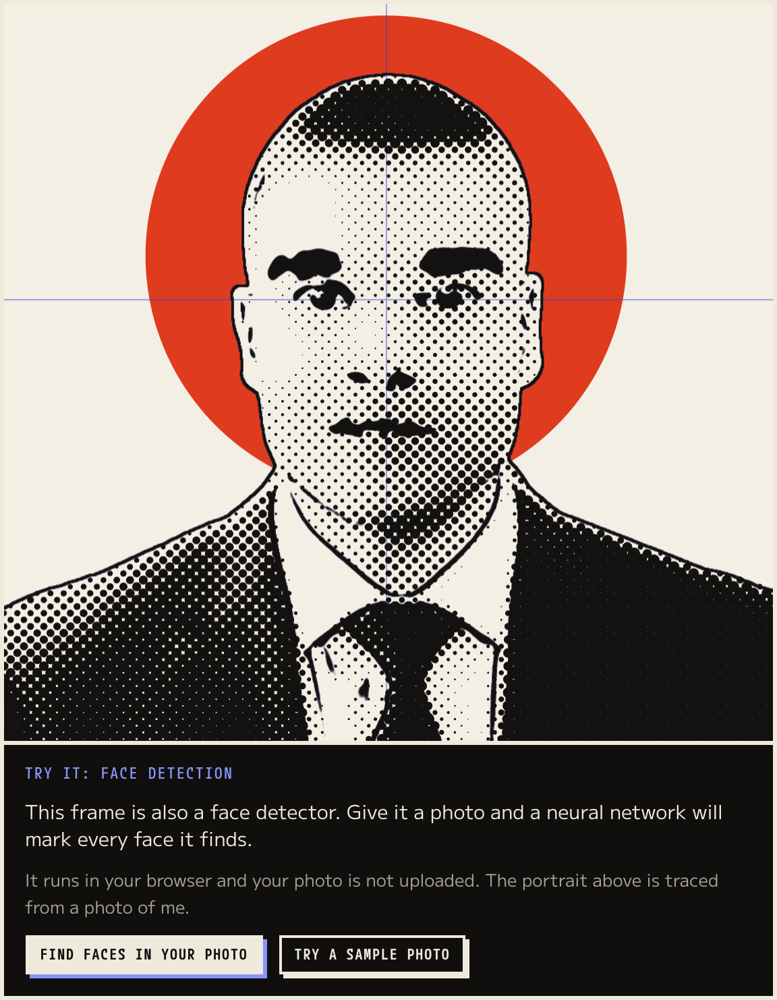
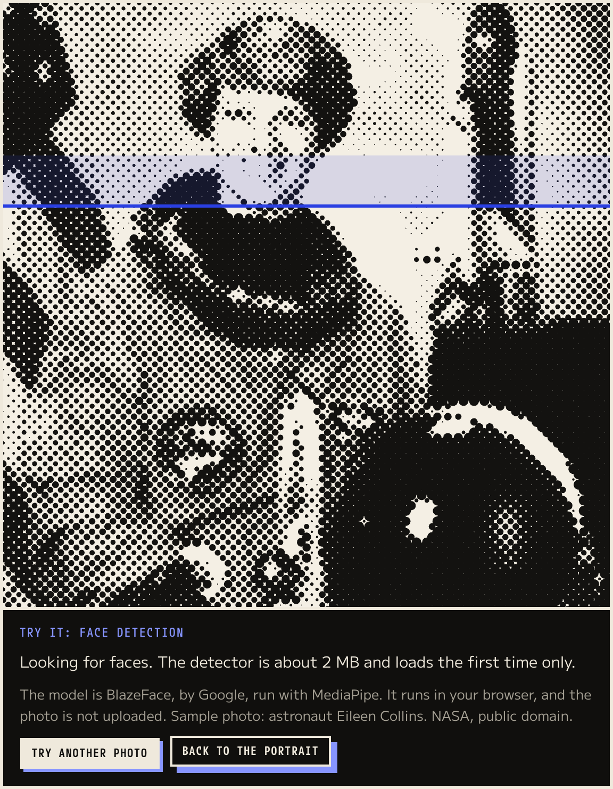
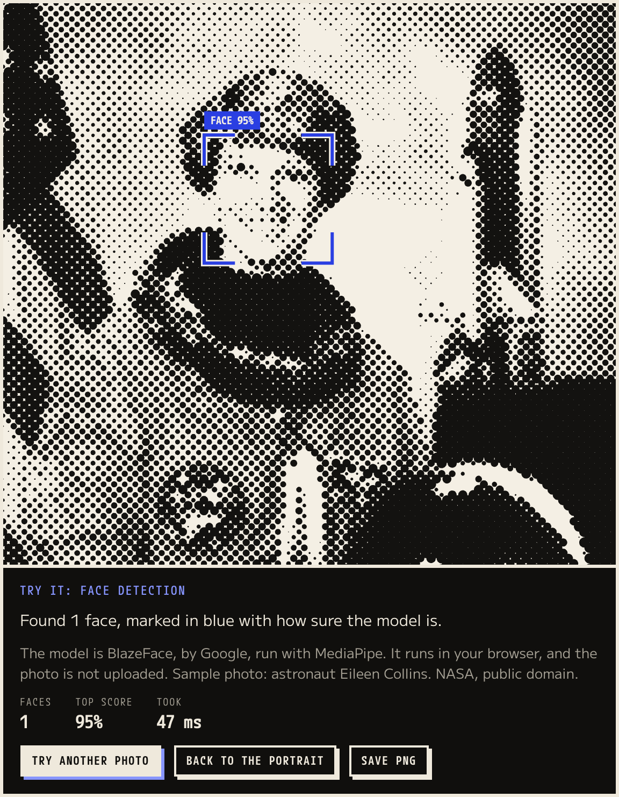
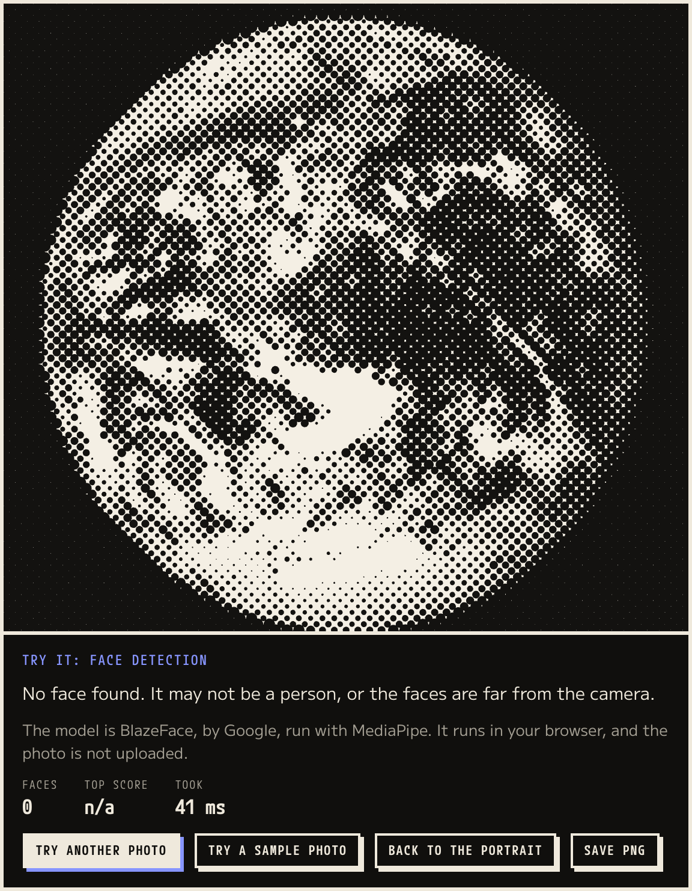

Fig. 1 The frame on the cover, in its four states

1. At rest
The portrait, and an invitation to try the detector.

2. Looking
The photo is printed at once. A scan line passes while the model works.

3. A face
Bracketed and scored. The crop re-centres on it.

4. No face
Said plainly. The photo is still printed.
Photos in panels 2 to 4: astronaut Eileen Collins, and the Earth from Apollo 17. Both NASA, public domain.